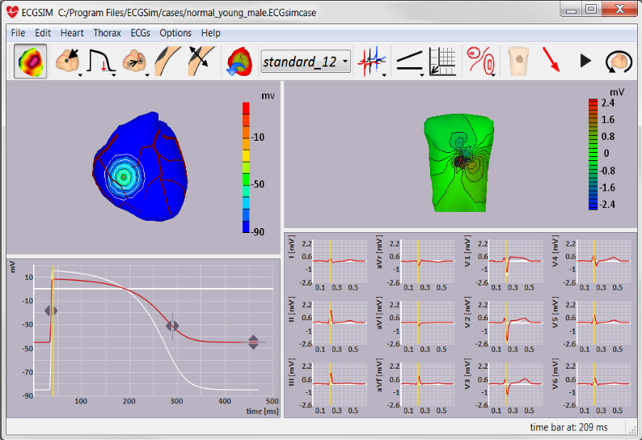

ECGSIM is an interactive simulation program that enables the user to study the relationship between the electric current sources of the heart and the resulting electrocardiographic (ECG) signals on the body as well as those on the surface of the heart.
It aims to serve as a research tool, as well as an educational tool.

ECGSIM simulates ECG signals by specifying the distribution of the electric source strength over the surface Sh bounding the myocardium of either the atria or ventricles, viz. the endocardium, epicardium and their connection at the base of the heart. The instantaneous source strength is taken to be proportional to the (non-uniform) instantaneous local transmembrane potential (TMP). The latter is specified at n nodes, where n = [1...N] vertices of a triangular mesh representing Sh.
At each node, the local TMP is specified by a number of parameters, the major ones being the timing of depolarization, dep(n), and repolarization, rep(n), and a parameter str(n) that sets the magnitude of the upstroke of the local transmembrane potential. In addition, parameters are incorporated that set the shape (wave form) of the TMP.
A set of pre-computed parameter values (e.g. dep(n), rep(n)) are provided. These were obtained through an inverse procedure (see references). The quality of the simulations based on these parameters can be observed by comparing the white (simulated) ECGs and the blue (measured) ECGs in the lower right panel of the figure above.
The program allows the interactive changing of all local parameter settings to study the effect
of such changes in the ECG. In the figure above an example is shown (red traces) in which the
magnitude of the upstroke of the local transmembrane potential in a local region was reduced,
thus simulating the manifestation in the ECG of local ischemia.
See TMP for a more comprehensive description of all TMP parameters.
As stated, the cardiac equivalent source involved is the distribution on the heart surface of the local transmembrane potential. The transfer used to determine the expression of these sources as body surface potentials was computed by applying the laws of current flow to an inhomogeneous torso model, the geometry of which was based on MRI data.
In the previous versions of ECGSIM (before version 2.0) the simulations were confined to the electric activity of the ventricles. In the current version the atrial activity has been included, thus enabling the simulation of P wave morphology. In addition, the spatial definition of the surface Sh has been improved by increasing the number of nodes from N=257 to N=1500 evenly distributed nodes and the realism of the mesh in the region of the right ventricular outflow tract (ROVT) has been been improved. Moreover, some additional shape parameters for the specification of the TMP waveform have been included.
Updates will be available from www.ecgsim.org. You may determine which version you are currently working with by selecting the -About- submenu item in the -Help- main menu item. Checking for updates can be done by selecting the -Check for updates- menu item that can also be found in the same main menu item.
The theory used has been developed starting in 1972 in a collaboration between the
department of Medical Physics and the department of Cardiology and Clinical Physiology
of the University of Amsterdam, and has been expanded from 1981 onward at the
Department of Medical Physics of the University of Nijmegen,
both cities located in the Netherlands.
ECGSIM was introduced to the scientific community through the paper in HEART included in the reference
list: ECGSIM; an interactive tool for studying the genesis of QRST waveforms.
The theory behind ECGSIM is explained in the papers shown in the reference
list. The appropriate references to the early use of ECGSIM would be the paper published in HEART.
The current simulation package has several predecessors. The ongoing development has been inspired by the
enthusiastic reactions of the numerous users all over the world.
Please note: ECGSIM is not a diagnostic tool. Any diagnostic application is only indirect; ECGSIM provides a forward simulation and does not solve the inverse problem.